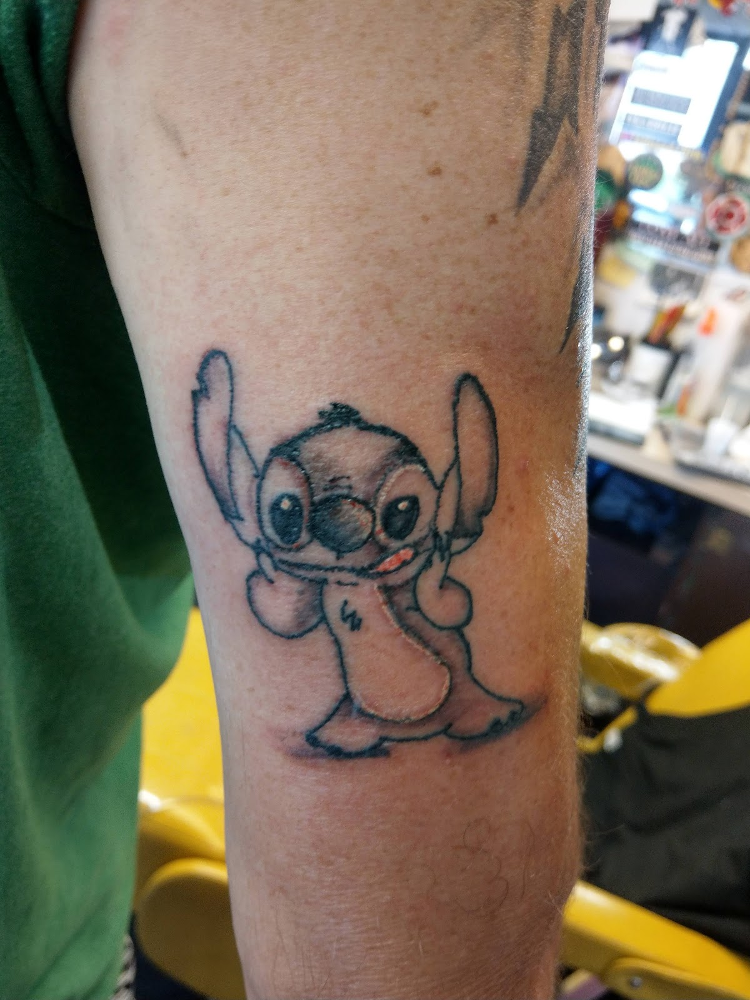

Black & grey freehand
Bob's specialty for three decades. It belongs front and center, not hidden behind a redirect.
accentsinink.com no longer belongs to the shop. It redirects straight to an unrelated shopping site. Meanwhile Bob has a 4.9 star Google rating built one appointment at a time. This preview shows what that reputation deserves online.

Bob's specialty for three decades. It belongs front and center, not hidden behind a redirect.
A simple booking form beats another phone tag cycle for both sides.
That reputation is currently invisible to anyone who searches the actual business name.
A second service line with zero presence on the hijacked domain today.
Get the domain back under control or move everything to a clean new one.
Real healed work, organized by style, loading fast on a phone.
Hosting, backups, simple edits, no mystery subscription stack.
“Bob is a master of his craft... I won't go anywhere else!”